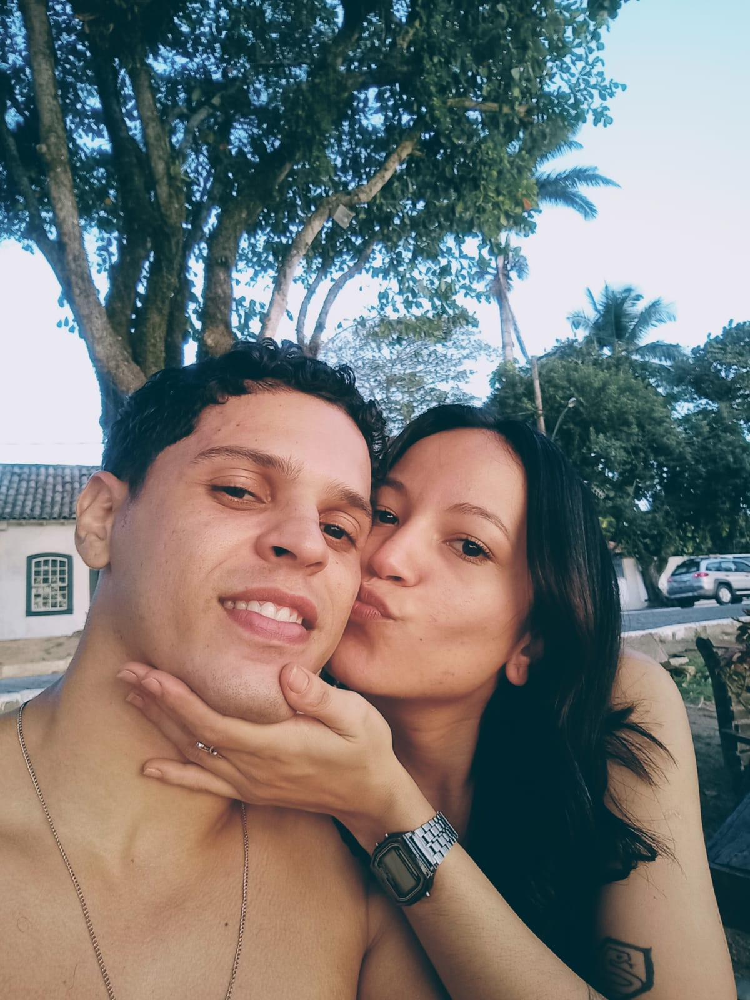
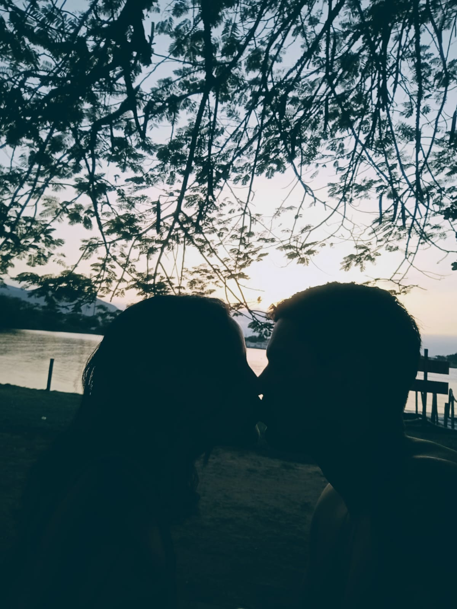
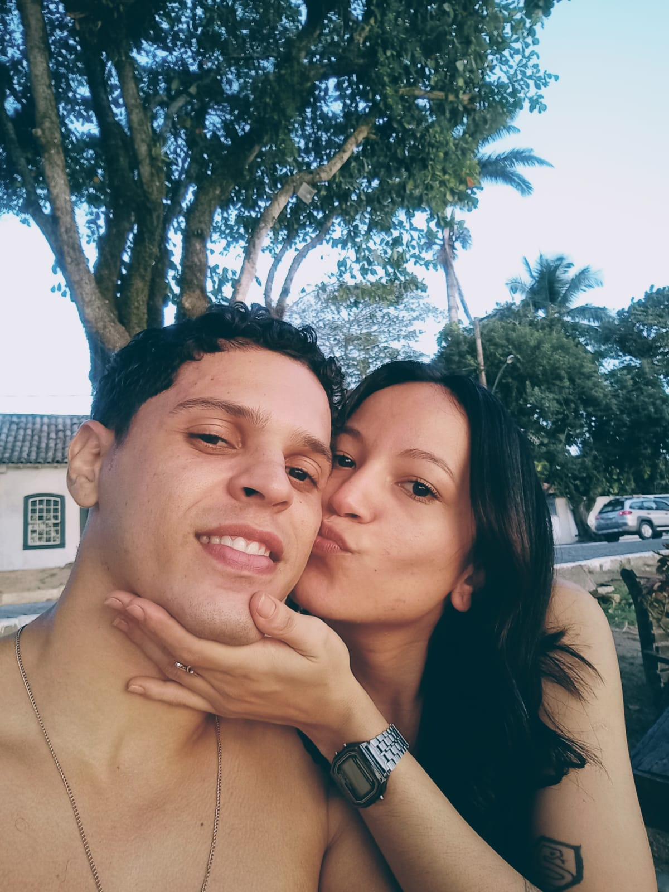
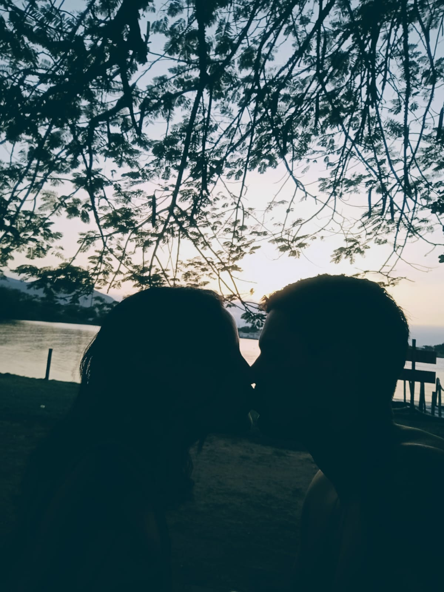

❤️ Nosso Amor ❤️


 



Você é meu presente mais bonito. Te amo mais a cada dia. 💖
Estamos juntos há:
Carregando...
Te olhar de novo foi como provar a existênncia do divíno.. Quando o tempo trouxe você para mim, entendi: há coisas que voltam porque nunca deveriam ter ido. Desde então, cada dia ao teu lado é feito de pequenos marcos — não porque são raros, mas porque contigo, até o simples se engrandece. A lógica é clara: Se meu coração bate mais forte quando você sorri, se minha paz se instala quando você fala, se meu mundo gira melhor com você nele... então amar você é, no fim, a decisão mais racional e ao mesmo tempo radical que eu já tomei. Te amo para sempre.... 💖✨